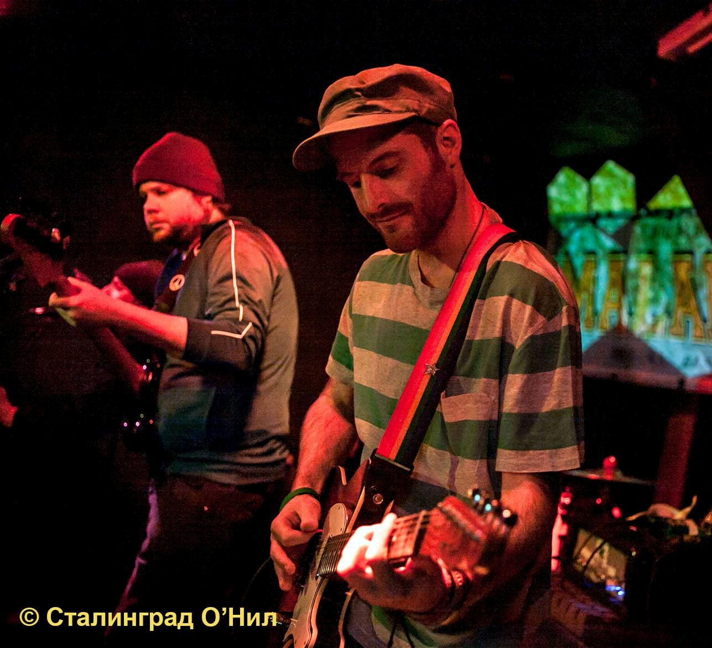
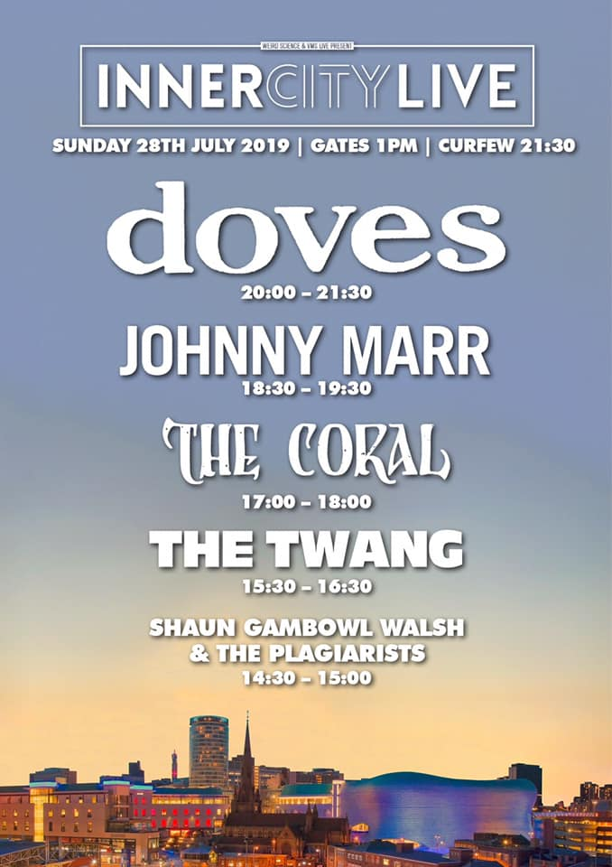

A life outside code...
I have many hobbies and interests outside of coding. My main passion in life is music, and to that end I have been playing in bands in and around Birmingham for over a decade. Primarily I play guitar but I can also play brass instruments and occasionally will sing from time to time too!
As well as performing I also write music and lyrics, whether that be for the bands I play with or for my own personal projects. Since 2015 I have been playing as a lead guitarist for Shaun Gambowl Walsh & The Plagiarists. We're very active in putting out all sorts of content beyond purely music, and I currently maintain and run a Twitch and YouTube channel for us, so I'm always busy even when I'm not up to my neck in code!
All the links to our content and various media channels can be found on the links page, so be sure to check them out!
Beyond my music, I also enjoy sports (especially football) and was a keen amateur footballer, having played competitively at 11-a-side since the age of 7 for various sides at various levels. Unfortunately, age has caught up with me and I've been forced to hang up my boots since 2019, apart from the odd kick about or 5-a-side match with mates.
Some of my broader interests include going to gigs, music festivals, traveling, video games, movies, reading (though I don't get round to it anywhere near as much as I'd like), collecting vinyl, science, politics and generally soaking up as much culture and knowledge as I can!